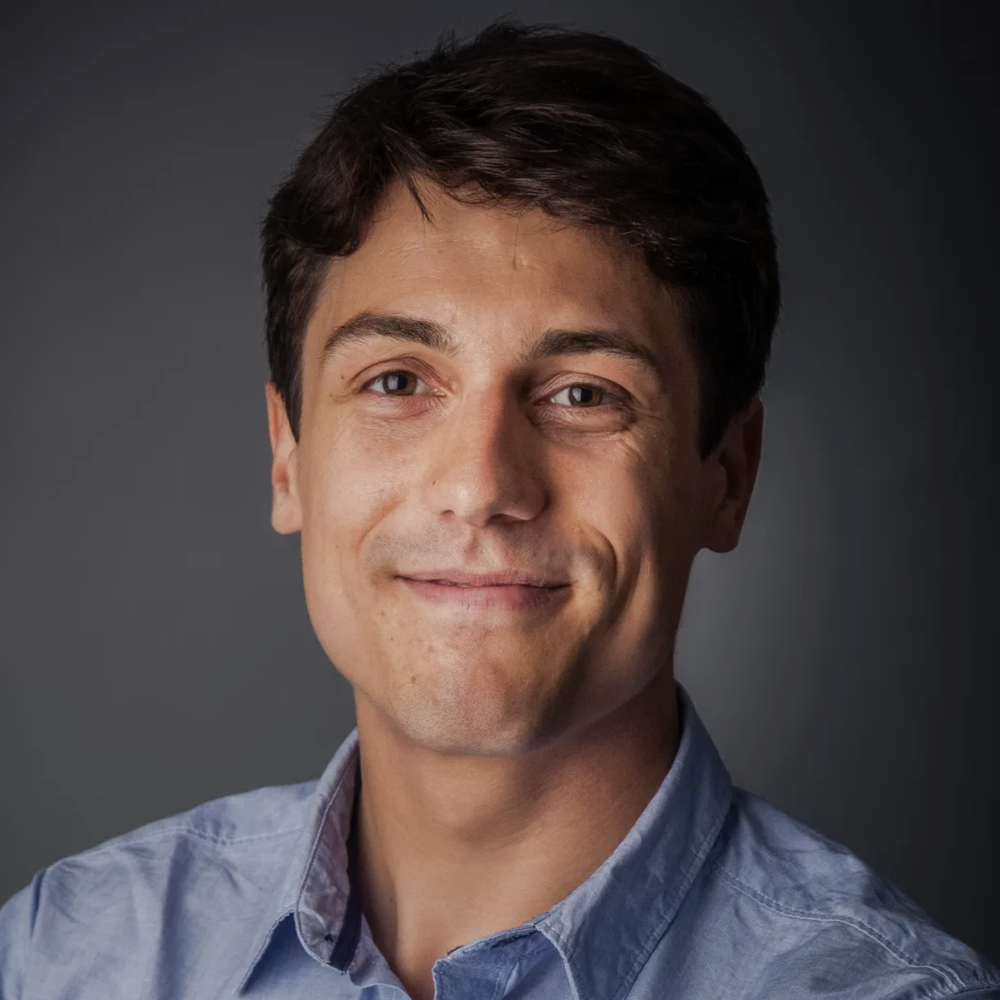
Robert Geirhos
Staff Research Scientist
Google DeepMind
WACV 2027 Workshop 1st Edition
What should a model think with when words are not enough? Should it keep an internal scene, imagine how objects move, revise a spatial hypothesis, or switch among visual, linguistic, symbolic, and tool-based computation?
Current multimodal large language models typically encode an image as context and carry out intermediate reasoning in language. Language is well suited to abstraction and communication, but it often struggles with precise pose, depth, correspondence, occlusion, and temporal or geometric structure. People, by contrast, often simulate how a scene might unfold rather than narrating every detail. When an apple falls from a table, we can imagine its motion, the collision, and where it lands without putting the whole process into words. That kind of spatial and dynamic reasoning may be essential for visual intelligence in video, 3D vision, robotics, medical imaging, and scientific vision.
The Latent Visual Reasoning (LVR) workshop focuses on visual reasoning that does not rely exclusively on text as the intermediate representation. We welcome work on visual tokens, latent scenes, imagined visual states, and other structured representations that keep task-relevant visual information, as well as hybrid systems that combine these with language, symbols, explicit visual operations, or tools. In every case, the intermediate representation should play a testable computational role, not merely coincide with an ordinary hidden activation.

Staff Research Scientist
Google DeepMind
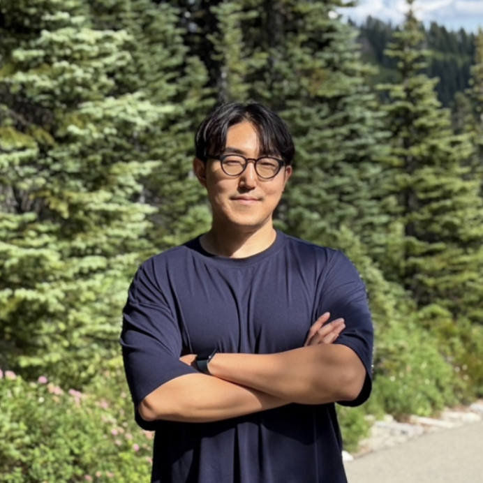
Assistant Professor
Korea University
Associate Professor
Carnegie Mellon University
We invite submissions on latent visual reasoning: work whose intermediate computation is not limited to text, especially when visual structure is kept and updated across reasoning steps. Topics include, but are not limited to:
We welcome archival regular papers and non-archival short papers, position papers, and extended abstracts. Archival papers will appear in the WACV 2027 proceedings; the other tracks will not. Archival papers must be at least five pages, subject to the conference's final requirements. Each track's publication status will be listed on this page.
All submissions will be handled through OpenReview. Submission portal: TO BE ADDED. Style file and formatting instructions: TO BE ADDED.
| Event | Date |
|---|---|
| Submission deadline | TO BE ADDED (AoE) |
| Notification to authors | TO BE ADDED (AoE) |
| Camera-ready deadline | TO BE ADDED (AoE) |
| Workshop date | January 4 or 5, 2027 (TBD) |
LVR will be a half-day, in-person workshop at WACV 2027. Times and room: TO BE ADDED.
| Session | Details |
|---|---|
| Opening and research agenda | TO BE ADDED |
| Invited talks | TO BE ADDED |
| Contributed orals and spotlights | TO BE ADDED |
| Posters and demonstrations | TO BE ADDED |
| Panel: “How Do We Know a Model Is Reasoning Visually?” | TO BE ADDED |
| Awards and closing remarks | TO BE ADDED |
University of Alabama at Birmingham
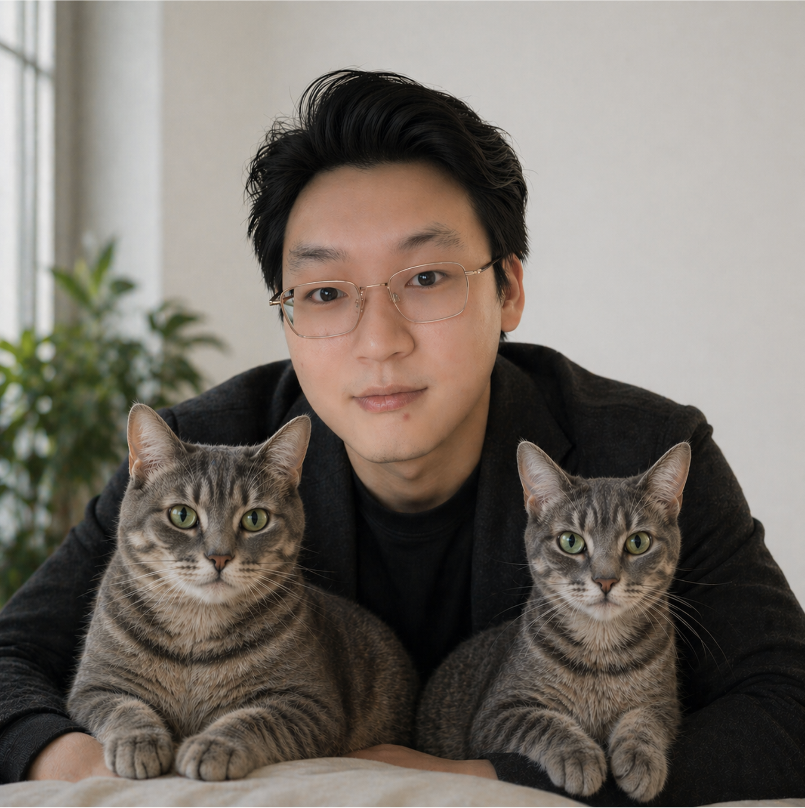
Yale University
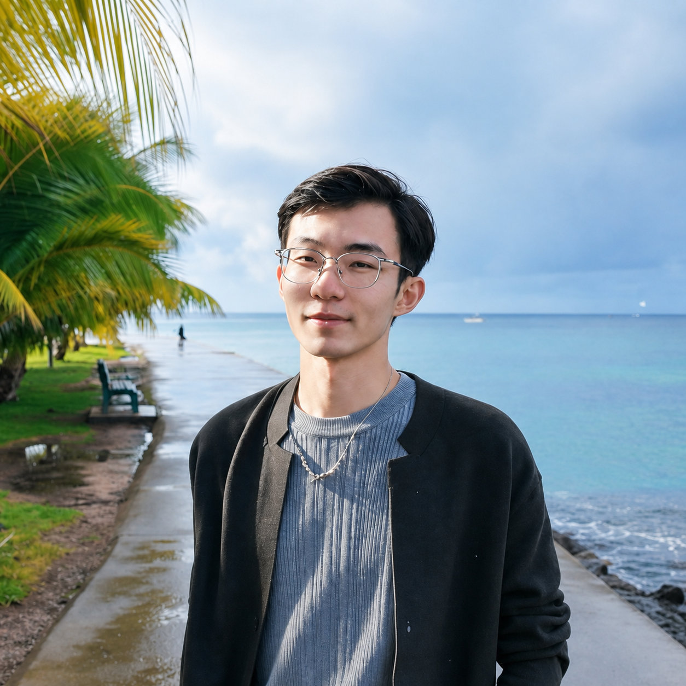
UTHealth Houston
Northeastern University
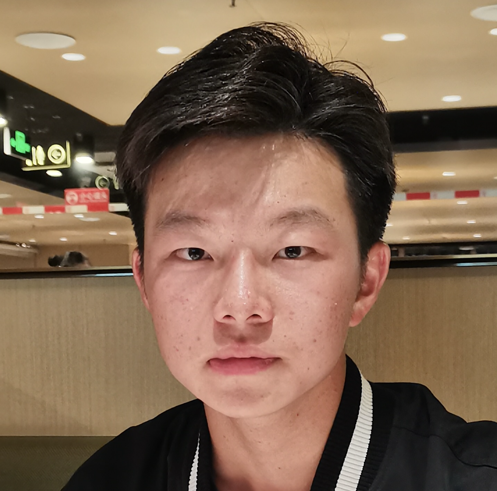
University of Virginia
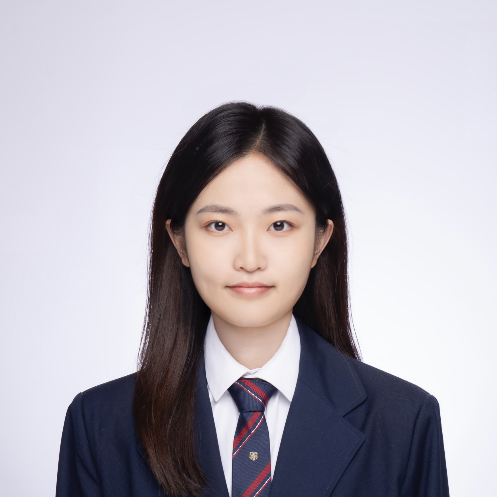
Northeastern University
Oak Ridge National Laboratory
University of Alabama at Birmingham
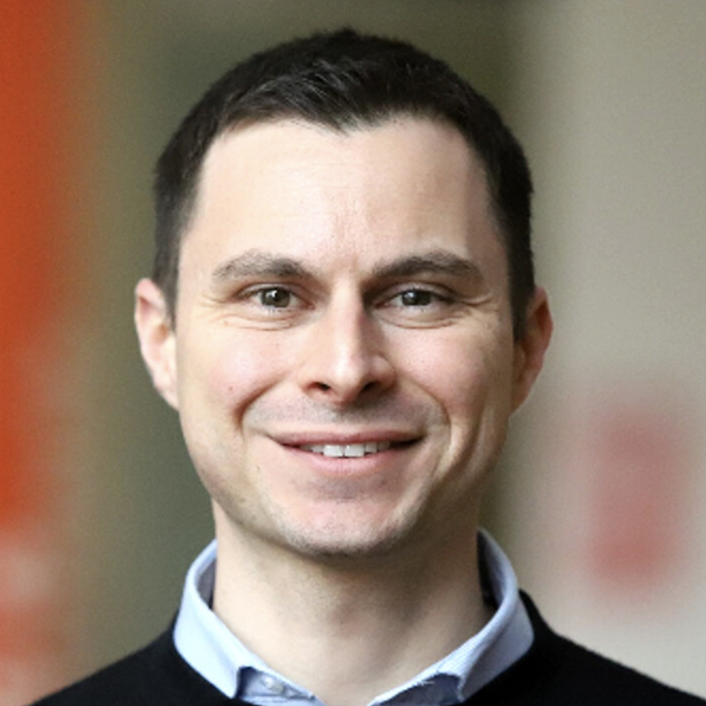
University of Virginia
Northeastern University
Contact: fioretto@virginia.edu
Harvard University
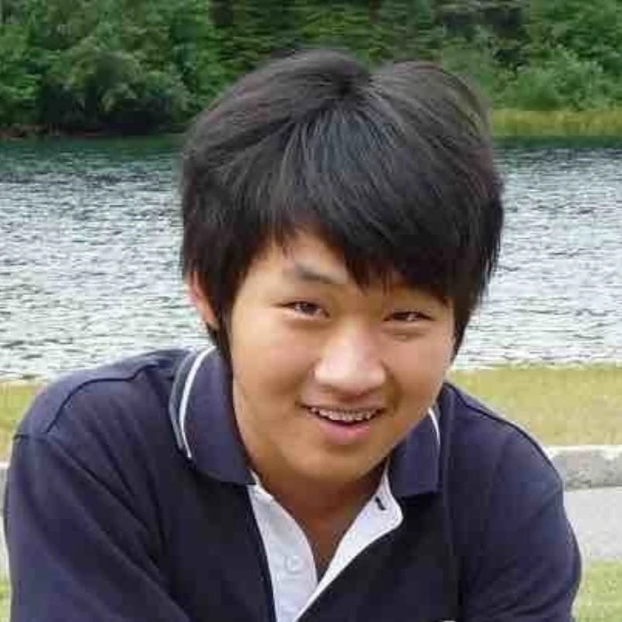
Amazon AGI
Georgia Institute of Technology
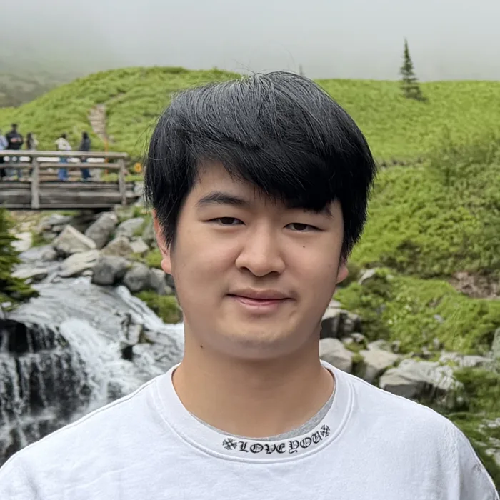
University of Southern California
Meta
Northeastern University
University of Glasgow
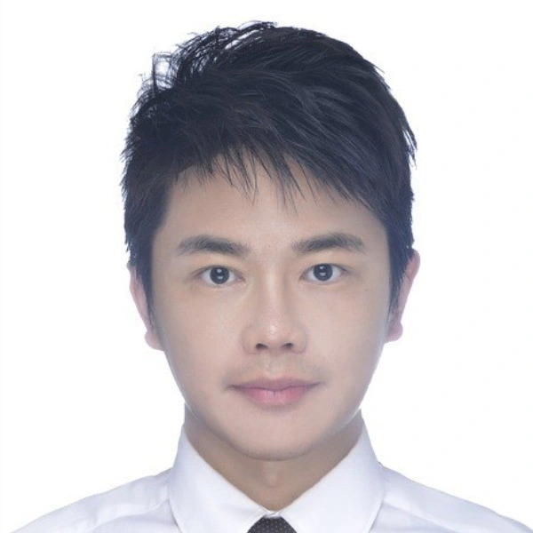
University of New South Wales
Northeastern University
Northeastern University
Northeastern University
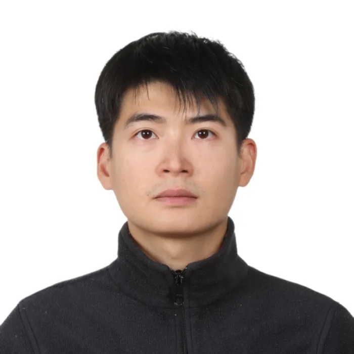
Northeastern University
WACV 2027 · Florida
Buena Vista, Florida
LVR will be held in person in conjunction with WACV 2027 on January 4 or 5, 2027. The exact workshop date and room will be announced.
Open in Google Maps